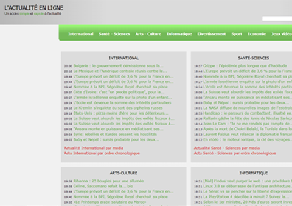
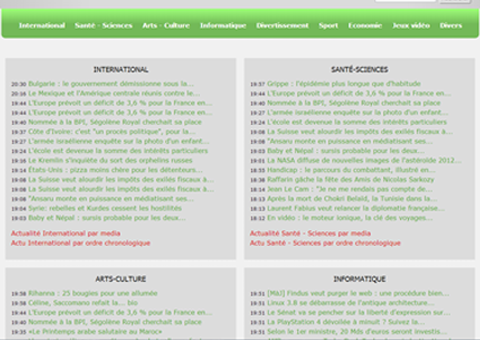
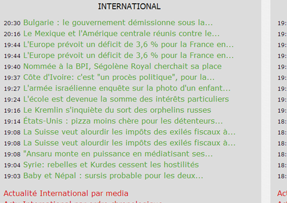

Projet d'inspiration

Inspiration de design existant
Projet réalisé dans le cadre du cours de graphisme web. Réalisé en avril 2013.
Le but était de réaliser une page d'accueil en s'inspirant d'un design existant (ici celui de Actualité-en-ligne) à condition que ce design représente un qualicatif précis. Ici la caractéristique de ce design est "vif".

Pourquoi vif?
La représentation de "vif" dans ce design est la capacité par rapport à l'information ou l'objectif de communication de la page d'accueil est d'informer un maximum les visiteurs.
Le design est volontairement simple et en bloc pour que l'utilisateur ai directement et avec facilité accès aux informations qu'il recherche

Le contenu principal
Le contenu principal est sous forme de bloc chacun représentant une catégorie qui regorupe des informations.